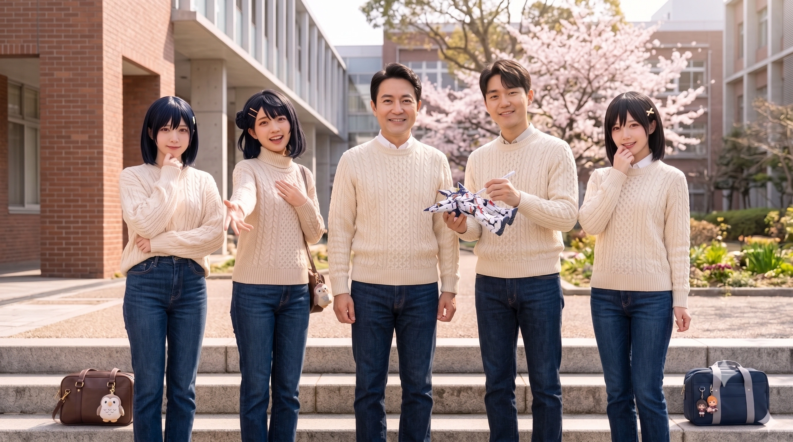

- 1. 개요
- 2. 생애 및 학창 시절
- 3. 외형 및 취향 (Feat. 아유무 빙의)
- 4. 정치 활동 및 성향
- 4.1. 소속 정당
- 5. 주요 일화 및 사건사고
- 6. 가족(부모님, 남매)과의 관계
- 7. 여담
- 8. 각주
1. 개요
"아버지의 정치적 재능과 어머니의 숨 막히는 압박력을 가장 완벽하게 물려받은, 효빈시 차세대 괴물."
효빈광역시의 국회의원 김성민과 철혈의 사모님 이한선 여사의 1남 2녀 중 차녀(막내). 현재 효빈권 최고 명문인 효빈대학교 정치외교학과에 재학 중이다.
김성민 의원의 자녀들 중 유일하게 아버지를 이어 정계에 진출하겠다는 뚜렷한 목표를 가지고 있다. 아버지 김성민이 상대방을 철저한 팩트와 논리적 압박으로 부숴버리는 '와시와시' 스타일이라면, 시연은 자신의 오시인 우에하라 아유무 특유의 '무겁고 섬뜩한 얀데레식 팩트 폭격'을 구사하며 웃는 얼굴로 교내외 적대 세력들의 척추를 접어버리는(...) 것으로 악명(?)이 높다.
2. 생애 및 학창 시절
2004년 11월 20일 출생. 아버지 김성민이 한창 효빈시의원으로 바쁘게 일하며 정치적 입지를 다지던 시기에 태어났다. (여담으로 언니 시안이 부모님께 "나도 동생을 만들어달라!"고 징징거려서 낳게 된 것이 탄생의 비화라고 한다. 그리고 시안은 현재 이를 뼈저리게 후회하는 중이다.)
2.1. 유우(진) 오시 친구 '고소유'와의 애증(?)과 동행
어릴 적부터 단짝 친구 고소유(高咲唯)에 대한 집착이 남달랐던 시연은, 소유가 다른 초등학교로 배정받자 바닥에 드러누워 떼를 써서 기어코 같은 학교로 배정을 바꿨다. 이때부터 시연의 '아유무식 집착'이 싹트기 시작했다.
태어날 무렵 가족이 중구 조유동에서 내조동으로 이사를 간 시점이었지만, 사실 학군 자체는 오빠, 언니와 동일한 효빈중동초등학교 배정권이었다. 그러나 어릴 적부터 특정 친구에 대한 애착과 집착(?)이 남달랐던 시연은, 자신이 찜한(?) 단짝 친구가 내조초등학교로 배정받자 "나도 그 친구랑 같은 학교 갈 거야!!"라며 바닥에 드러누워 떼를 썼다고 한다. 마침 내조초등학교에서 평판이 좋은 혁신 교육 프로그램을 운영 중이었던 터라 부모님도 결국 전학/배정 변경을 허락해 주었는데, 돌이켜보면 이때부터 시연의 '아유무식 집착'이 싹트기 시작한 첫 사건이었다.
그 시절 시연이 집착했던 단짝 친구는 현재 '타카사키 유우' 오시로 성장했으며(...), 시연과 초등학교, 중학교, 고등학교는 물론 대학교까지 완전히 똑같이 진학했다. 현재 시연과 같은 효빈대학교 사회과학대학 소속의 행정학과에 재학 중이다.
놀라운 점은 실제 아유무처럼 시연 본인도 학업 성적이 최상위권이었는데, 학창 시절 유우 오시 친구가 성적 문제로 좌절하거나 수학을 포기하려 할 때마다 시연은 "유우 쨩... 나랑 같이 효빈대 가기로 약속했잖아...? 설마 나 버리고 딴 데 가려는 건 아니지...?"라며 문제집을 찢어버릴 듯한 죽은 눈으로 쳐다보았다고 한다. 이 섬뜩한 압박감에 공포를 느낀 친구는 울며 겨자 먹기로 시연이 옆에 앉혀놓고 펼쳐준 수학의 정석을 풀며 미친 듯이 공부했고, 결국 명문대까지 멱살 잡혀 오게 되었다.[1]공부 안 하면 물리적으로 찢길 것 같아서 생존 본능으로 공부했다고 카더라.
[유우 오시 찐친, 고소유]
고소유의 한자(高咲唯)는 놀랍게도 '타카사키 유우(高咲侑)'에서 끝 글자만 하나 다르고 똑같다(...). 실제 유우처럼 가슴 뛰는 '두근거림'을 좋아하지만, 피아노는 잘 못 친다고 한다. 대신 달리기는 엄청나게 빨라서 모 검은색 말 모티브의 캐릭터(키타산 블랙)가 떠오르는 대목이다. (참고로 소유 본인도 그 검은색 말 캐릭터를 엄청 좋아한다고 한다(...))
소유는 무언가를 선택할 때마다 "하나만 고르는 건 무척 어려워요...(히토리다케난테 에라베나이요)"라며 우유부단하게 구는데, 이 버릇 때문에 시연이 멘탈이 나가 진짜 아유무화(化) 될 뻔한 적도 있었다. 진로 문제로도 "이것도 저것도 두근거리는데 어떡하지 ㅠㅠ(히토리다케 에라베나이요)" 시전하다가, 결국 시연에게 영감을 얻어 시연(정치외교학)과 학과는 다르지만 같은 사회과학대학 소속인 효빈대학교 행정학과에 진학하게 되었다.
[영화관 밀회 발각 사건과 공식 커플링]
어느 날 마음고생이 심했던 친구 고노애를 걱정하고 챙겨주기 위해 고소유가 시연 몰래 단둘이 영화를 보러 간 적이 있었다. 하필 현장에서 시연에게 딱 걸렸는데, 시연은 우선 멘탈이 나간 고노애를 먼저 집으로 보냈다. 그러나 노애가 시야에서 사라지자마자, 시연은 소유를 따로 부른 뒤 완벽한 죽은 눈으로 "소유 쨩... 왜 나한텐 말 안 했어...?(...)"라며 아유무 얀데레 모드로 추궁해 소유를 섬뜩하게 만들었다고 한다. 그럼에도 소꿉친구다 보니 가장 친하게 지내며, 친구들 사이에서도 사실상 공식 커플링(?) 취급을 받는다.
2.2. 니지동 실사판(?) 찐친 그룹 결성 및 인물 관계
중고등학교 시절을 거치며 시연의 주변에는 기묘하게도 니지가사키 멤버들을 오시로 삼는 찐친 그룹이 결성되었다.
-
고소유(高所有) [타카사키 유우 오시]: 시연의 19년 지기 소꿉친구이자 이 거대한 찐친 그룹을 하나로 묶어주는 절대적인 구심점. 원본 캐릭터인 타카사키 유우처럼 '천연 무자각 하렘 마스터' 기질을 타고났다. 과거 육상부 에이스 출신답게 트랙을 전력으로 질주하는 눈부신 피지컬과 폭발적인 운동 신경을 자랑하며, 남들이 부끄러워할 칭찬도 숨 쉬듯 자연스럽게 뱉어내는 치명적인 플러팅 장인이다.
시연이 무거운 사랑(얀데레)을 뿜어내며 평생을 감시하고 집착하는 절대적인 1순위. 소유가 다른 친구들에게 "너희들의 그런 점, 정말 좋아해(다이스키)!"라고 외치거나 "히토리다케난테 에라베나이요(하나만 고르는 건 무리야)!"라며 모두를 껴안을 때마다, 시연의 눈에서 하이라이트가 완전히 꺼지게 만드는 만악의 근원(?)이다. 하지만 그룹 내에서 피 튀기는 갈등(예: 유채나와 나수미의 기싸움, 노애의 붕괴 등)이 터질 때마다 특유의 인싸력과 흔들림 없는 포용력으로 상황을 완벽하게 중재해 내는 진정한 주인공 포지션이기도 하다. 나수미가 구워낸 빵을 너무 맛있게 먹어치우다 두 달 만에 7kg을 '살크업'한 뒤 피눈물을 흘리며 트랙을 뛰어야 했던 웃픈 흑역사도 존재한다. -
오이슬(吳이슬) [시즈쿠 오시]: 시즈쿠(이슬)라는 이름답게 연극부 및 더빙부 부원 출신이다. 원본 캐릭터인 오사카 시즈쿠 특유의 '야마토 나데시코' 같은 단아함을 벤치마킹하여 평소에는 조신하고 점잖은 척하지만, 연기 스위치가 켜지거나 특정 순간에 과몰입하여 급발진을 하는 기질까지 똑 닮았다고 한다
(...). 시즈쿠의 상징인 빨간 리본 대신 본인만의 아이덴티티로 파란 리본을 묶고 다닌다.
시즈쿠가 대형견 '오필리아'를 끔찍이 아끼는 강아지파인 것과 대조적으로, 이쪽은 고양이를 키우는 열렬한 냥집사이며 의외로 술을 매우 즐기는 애주가라는 치명적인 현실 반전 매력을 지녔다(...). 배우와 성우 중 고민하다가 성우의 길을 택해 효빈대 만화애니메이션학과 성우 전공으로 진학했다. 고노애가 마음고생으로 쓰러지려 할 때 진심으로 걱정하며 챙겨주었고, 멘탈 케어를 위해 본인 집 고양이를 무한으로 쓰다듬게 해주었다고 한다.
[스파르타 과외의 희생양 1] 하술할 강하애의 지옥 같은 스파르타 과외 주요 피해자 중 한 명이다. 스터디 중 도망치려다 붙잡히면 형벌(?)로 두꺼운 전공 서적과 영어 기출문제를 밤새도록 완벽한 성우 발성과 감정 연기를 담아 낭독해야만 한다. 본인은 조신한 척하지만, 계속 틀려서 멘탈이 터지면 그 애주가 기질이 올라와 "아 몰라, 술 내놔!!"라며 급발진을 시전하기도 한다.이때 머리의 파란 리본을 집어던지며 포효한다고 카더라.[2]다음 날 술이 깨면 전날의 급발진을 부끄러워하며 머리를 쥐어뜯는 게 일상이다. -
나수미(羅須美) [카스미 오시]: 나카스 카스미와 이름(수미)이 절묘하게 비슷하며, 실제 카스미처럼 스쿨 아이돌부 부장 출신이다. 그룹 내에서 카스미처럼 귀여움 포지션을 담당하려 하며, 본인을 "수미수미가 아니라 수밍이라고!" 지칭하는 등 캐릭터에 완벽하게 동기화된 모습을 보인다.
공부를 아예 못하는 편은 아니지만 그룹 내에서는 제일 못하기는 하고(...), 대학 전공도 실기로 최대한 쇼부를 볼 수 있는 학과를 선택해 공부와 거리가 멀어 보이지만 "나는 역사랑 고문 싫어하는 카스밍이랑은 다르다!"고 뻔뻔하게 항변한다. 카스미의 취미인 제빵 능력을 200% 계승하여 빵을 기가 막히게 잘 구우며, 현재 효빈대학교 제과제빵학과 재학 중(실기빨로 아슬아슬하게 문 닫고 들어옴)에 빵집 아르바이트도 병행하고 있다.
종종 친구들을 골려먹으려고 카스미 특유의 어설픈 '하라구로' 장난(신발에 몰래 빵 숨기기, 매운 소스 넣기 등)을 치려다 늘 본인이 당하고 마는 허당끼마저 완벽하게 빼닮았다.범죄자에게 카스밍의 정의의 코페빵(물리)을 먹이듯, 말 안 듣는 친구들에게 수밍의 바게트(물리)를 먹일지도 모른다.
[스파르타 과외의 희생양 2] 공부하기 싫을 때마다 "수밍은 내일 빵집 알바 가야 해서 자야 해!"라며 귀여운 척 뻔뻔하게 도주를 시도하지만, 강하애에게 자주 쓰는 오븐 전원 코드를 압수당하거나 갓 구워놓은 빵을 인질로 잡히는 바람에 꼼짝없이 끌려가 특훈을 받는다. 소중한 빵을 지키기 위해 눈물을 뚝뚝 흘리며 오답 노트를 적는 모습이 압권이다.[3]그녀가 알바하는 빵집의 이름은 우연의 일치인지 '야마부키 베이커리'와 비슷한 발음이라고 한다. -
유채나(柳菜奈) [유키 세츠나 오시]: 효빈대학교 사회과학대학 공공학과에 재학 중인 그룹의 1기 마지막 퍼즐. 이름부터 나카가와 나나의 '채(菜)'와 '나(奈)'를 완벽하게 조합해 따왔으며, 세츠나의 성지인 안천구 칠채동 출신의 근본을 자랑한다. 평소 공적인 자리(학생회, 학과 행정 등)에서는 머리를 단정히 묶고 두꺼운 안경을 쓴 채 빈틈없는 원리원칙주의 모범생(나카가와 나나 모드)으로 행동하지만, 자신의 오시(세츠나, 시이나 타키)나 '다이스키(정말 좋아하는 것)'한 영역이 관련되면 안경을 아스팔트에 내동댕이치고 머리를 푼 채 열정을 폭발시키는(유키 세츠나 모드) 완벽한 이중생활의 달인이다.
공공학 전공 서적을 통째로 외우는 천재형 브레인이지만, 주방에만 들어가면 정체불명의 보라색 독가스와 유독가스를 뿜어내는 파멸적인 독요리(요리치) 전문가다. 과거 고소유에게 사랑을 담아 도시락을 싸주겠다며 주방에 들어갔다가 플라스틱 도시락통을 녹여버리고 부엌을 환각의A·ZU·NA 랜드로 만들어버린 연성술을 선보여, 나수미에게 엑스칼리버(바게트)로 구타당하고 주방 영구 출입 금지 처분을 받았다. 또한, 스칼렛 레드(#D81C2F) 도색이 된 효빈광역시 급행버스와 효빈 시티투어버스 T10번(타키의 츤데레 잔소리와 세츠나의 각성 브금이 교차하는 광기 어린 노선)이 지나가면 GPS를 실시간으로 추적하며 비명을 지르는 중증 대중교통 오타쿠이기도 하다. 극우 혐오 빌런 윤재훈이 자신의 최애 급행버스에 오물을 투척하자 안경을 벗어던지고 "세츠나 스칼렛 스톰!!"을 외치며 물리적으로 멱살을 잡고 참교육한 전설적인 무력의 소유자다.
[고소유를 둘러싼 얀데레 정실 대전] 육상부 에이스인 소유가 트랙을 질주하는 모습에 반해 "다이스키!!"를 외치며 맹렬히 대시했다가, 하필 소유를 독점하려는 시연의 얀데레 레이더에 제대로 걸려들었다. 효빈대 체육대회 날 소유가 1등으로 들어오자마자 수건을 들고 뛰어가다가, 눈의 하이라이트가 완전히 꺼진 채 다가온 시연에게 "채나 쨩... 우리 소유 쨩 수건은 내가 챙겨왔는데? 척추를 반으로 접어버리기 전에 저리 가있을래? ^^"라며 살벌한 차단을 당한 일화는 교내 아찔한 레전드로 꼽힌다. 그럼에도 불구하고 시연과는 대학 학생회 선거 등 공적인 일에서만큼은 완벽한 정치-행정 콤비로 활약하는 든든한 아군이자, 소유의 옆자리를 두고 다투는 애증의 라이벌이다. -
고노애(高露愛) [카나타 오시]: 시연의 든든한 참모이자 효빈대 심리학과 재학생. 이름부터가 '코노에(고노예...)' 발음과 비슷하며, 2살 터울의 여동생 고하루(하루카 포지션, 중촌대학교 음악과)를 끔찍이 아낀다. 카나타와 포지션은 같으나 동생이 과거 너무 빡센 짐덩어리라 뼈를 깎는 고생을 한 인물이다.
- 지독한 '고노예' 시절과 K-장녀의 굴레: 부모님 중 아버지는 뇌전증으로 투병 중이시고 어머니는 수입이 적어 식당 일 가느라 바빠서, 본인이 직접 동생 용돈을 전부 챙겨야 했다. 대학에 들어오자마자 마트 푸드코트 알바, 교내 편의점 알바, 아동센터 멘토링 근로장학까지 쓰리잡을 뛰며 장학금을 위해 뼈와 살을 갉아먹었다. 작중 카나타도 장학금을 받기 위해 열심히 살지만, 현실의 고노애는 이름 그대로 '고노예(...)'처럼 치열하게 생존해야 했던 아이였다.
- 동생 고하루의 끔찍한 학폭 피해와 재능 발현: 동생 고하루는 철없고 뻔뻔한 개차반 빌런인 줄로만 알았으나, 사실 중학교 2학년 시절 가해자 조창년에게 지독한 괴롭힘과 학교폭력을 당해 극단적 선택 시도까지 감행했던 가슴 아픈 과거가 있다. 당시 무능하고 부패한 내성중 담임 이지훈은 가해자의 성의 없는 사과("뭔 잘못인지 모르겠지만 미안")로 사건을 완벽하게 은폐·축소했고, 가해자가 "응 니애미"라며 2차 가해를 시전하는 것도 방관했다. 이 뼈아픈 폭력은 훗날 하루가 언니에게 병적으로 의존하게 만드는 원인이 되었다.
이후 언니가 돈을 벌기 시작해 고등학교(효빈상업고등학교)에 진학한 하루는 뛰어난 음악적(문예창작) 재능을 발견했고, 교내외 상을 휩쓸며 훗날 중촌대학교 음악과로 진학하는 기적을 이뤄낸다. - 전설의 심해 학점과 가스라이팅의 전말: 중촌대 입학 후 하루는 "음악은 참 재밌는데 알파벳과 숫자는 나를 미치게 한다"며 필수 교양을 던져 2.25 ~ 2.65라는 심해 학점을 기록했다. 늦게 일어나면 뻔뻔하게 언니 돈으로 택시를 타고 등교했다. 특히 하루가 합격한 교내 도서관 근로장학(근장)은 본인의 성적이나 실력이 아니라 오직 100% 운과 '기초생활수급자(1구간)'라는 절대적인 신분 버프 덕에 기적적으로 얻어걸린 것이었음에도, 하루는 이를 수시로 땡땡이쳤다.
과소비가 매우 심해서 고노애가 쓰리잡으로 한 달에 200만 원 가까이 벌어와도, 그중 용돈으로 90만 원 가까이 뜯어가고 심지어 투병 중인 어머니의 용돈 3만 원까지 갈취하려던 막장 상황이었다. 하루는 수시로 "돈 안 주면 학교 안 간다, 공부 안 한다, 죽어버리겠다"며 극단적인 협박과 정서적 인질극을 벌였고, 고노애는 어린 시절부터의 '부모화(Parentification)' 상처와 동생의 위기를 온전히 내 책임으로 느끼는 '역전이(Countertransference)' 현상이 결합되어 급성 공황장애와 불안장애 속에서 호구 짓을 강요당했다.[당시 고하루와 고노애의 실제 문자 대화 내역 발췌]
고하루: 나 얼마 남음
고노애: 2만 9천원
고노애: 하루야 그리고 나 이제 바쁘니까 이제부터 너가 좀 계산할수 있을까?
고하루: 애초에 언니가 씨발 니 걸로 해 놓는다고 그래서 내가 못 보는
고하루: 그걸로 언니가 지랄을 하면 난 뭐라고 해 줘야 함
고노애: 알겠어...
고하루: 씨발 니가 돈 더 줄 거 아니라며. 그러니까 정확하게 하려고 이러잖아.
고노애: 알겠어
고하루: 진짜 개빡치게 - 과로 실신과 시연의 1차 개입 (트리거): 노애는 마음이 여리고 스트레스 해소도 고작 애니 시청 정도로 끝났던 바람에, 힘이 세지 않아 운동이든 벽을 치든 화를 풀 길이 없었다. 통학은 덜 빡셌음에도 쓰리잡 알바와 동생의 짐이 너무 무거워 한계에 달해 있던 노애는, 어느 날 카나타를 너무 닮았는지 항상 졸리긴 했지만 유독 상태가 안 좋았던 날, 무릎 인대 염증으로 찢어질 듯이 아픈데도 억지로 일을 하고 집에 가다가 결국 길에서 과로로 쓰러지고 만다. (참고로 당시 고하루는 기초생활수급자 버프로 기적적으로 붙은 근장마저 땡땡이를 치고 있었다.) 이상함을 눈치채고 노애를 병원에 데려간 김시연은, 소중한 친구가 말라 죽어가는 꼴에 참았던 분노를 터뜨리며 선제공격을 날렸다.
"일은 너를 위해서 더 하고 싶으면 해도 돼. 근데, 네가 힘들게 모아서 4점대 학점으로 받은 장학금이랑, 코로나 세대랑 엮여서 못 받은 그 인문100년장학금 못 받은 걸로 너무 힘들다고 울고, 네 동생은 맨날 너한테 말로만 고맙다고 하고 언니 취급도 안 하고!
부모님 아프다고 너 고딩 때 전화했던 그 내성중 그 이지훈 그 새끼? 내가 큰 사람 돼서 잘근잘근 팩트로 패도 충분히 되니까 아예 밟아줄게. 그리고 너네 동생, 내가 보기엔 너무한 거 같아. 내가 비록 막내고, 나는 언니, 오빠가 챙겨주긴 했지만, 이건 동생 입장에서 봐도 아니야. 좀 많이 미친 거 같아.
노애 너는 우선 심리상담부터 받아. 그리고 하루 걔도, 근장 안 나가서 돈 못 벌면 본인 책임이지, 언제까지 언니한테 손 벌릴 생각인 거야? 평생 그렇게 살 거야?" - 핏빛(?) 병실 싸움과 노애의 처절한 절규: 병실에서 깨어나자마자 시연에게 뼈아픈 팩트를 맞은 노애는, 동생에 대해 너무 매몰차게 이야기한 것에 격분하고 한계에 달해 있던 자신의 열등감과 십수 년간 억눌린 상처가 폭발하며 평생 단 한 번도 안 하던 쌍욕과 함께 시연을 향해 격렬한 분노를 쏟아냈다.
"입 닥쳐! 다 안다는 듯이 지껄이지 마! 너는 막내라서 오빠(김시율)랑 언니(김시안)가 다 챙겨줘서 공주님처럼 편하게 살았지? 아버지도 시의원님이시니까 돈 걱정도 없고, 든든한 울타리 안에서 사랑만 받고 자랐잖아! 근데 나는? 아버지는 뇌전증으로 쓰러지시고, 엄마도 식당 일 가느라 바빠서 방과 후에 너희들하고 자주 놀지도 못했어. 게다가 나도 중학교 때 개만도 못한 새끼들한테 학폭 당해서 매일매일 지옥 속에서 끔찍하게 힘들게 살았다고!
네가 내 삶을 뭘 알아? 매일 아침 눈 뜰 때마다 '오늘은 또 동생이 무슨 사고를 칠까', '돈 안 주면 쟤가 진짜로 죽어버리진 않을까' 심장이 철렁 내려앉는 그 기분을 네가 알아? 무릎 인대가 찢어질 듯이 아파도, 쓰리잡 뛰면서 푸드코트에서 남들 밥 먹는 거 구경하며 굶주려 본 적 있어? 내가 돈 안 주면 쟤가 정말 죽어버릴까 봐 두려워서 내 뼈와 피를 갈아 넣었던 그 끔찍한 공포를 네가 아냐고! 넌 단 한 번이라도, 가족이라는 존재 때문에 숨이 턱턱 막혀서 차라리 내가 콱 죽어버리는 게 이 지옥을 끝내는 방법이라고 생각해본 적 있어?
넌 온실 속 화초 같은 막내면서 내 어깨에 얹힌 이 가장의 짐 무게를 알기는 해? 이 새끼야, 내가 매일매일 어떤 마음으로 버티며 살았는 줄 알아? 밉고 죽이고 싶을 만큼 원망스러우면서도, 나마저 버리면 쟤는 진짜 죽을지도 모른다는 불쌍함과 죄책감이 뒤섞여서... 그 감정이 나를 어떻게 미치게 갉아먹고 있는지, 너같이 편하게 산 새끼는 평생 죽었다 깨어나도 모를 만큼 내 마음이 끔찍하게 복합적이라고!!" - 아유무식 완벽 심리 팩트 폭격 (참교육): 노애의 피 맺힌 처절한 절규에도 시연은 전혀 물러서지 않고, 오히려 얀데레 특유의 싸늘하게 가라앉은 눈빛으로 심리학 전공자인 노애의 논리를 완벽하게 박살 내는 2차 팩트 폭격을 꽂아 넣었다.[4]이때 시연의 논리는 빈틈이 전혀 없어서 팩트의 융단폭격 수준이었다.
"그래, 난 혜택받고 자란 거 맞아. 하지만 심리학 전공하는 네가 스스로를 객관화하지 못하는 건 짚고 넘어가야겠어. 네가 말하는 그 '복합적인 마음'? 그건 자기 연민에 찌든 '구원자 콤플렉스'와 '부모화'가 만들어낸 망상이야. 넌 동생을 돕는 게 아니라 아예 자립심을 쳐부수는 공범이라고.시연의 압도적인 논리와 진심에 말문이 막힌 노애는, 자신을 위해 매몰차게 악역을 자처한 친구의 마음에 결국 화를 거두고 오열하며 시연을 끌어안았다. "그럼에도... 나를 위해 그렇게 생각해주고 불안해하고 걱정해 주는 친구 앞에서, 동생 욕한다고 막 이 새끼 저 새끼 하는데... 정말 내가 좋은 친구니?" 시연은 옅게 미소 지으며 다독였다. "물론 네가 화날 만했고, 그래도 난 친구니까 네가 더 망가지지 않았으면 해서 이야기해 줬어." 결국 노애는 심리치료를 병행하며, 본인이 그동안 했던것이 오히려 동생의 자립심을 줄여버린 결과를 낳았고, 본인의 힘듬만을 가중시킨을 깨닫게 되고, 초반에는 용돈을 줄이다가 어느 순간 완벽하게 끊어내게 된다.
네 동생 고하루? 학점 2점대 바닥을 기면서 이번 도서관 근장 붙은 거, 순전히 운이랑 '기초생활수급자' 버프 하나로 기적적으로 얻어걸린 거잖아. 근데 걘 그것마저 땡땡이치고 네 등골을 빨아먹어. 네가 뼈 깎아서 4점대 학점 만들고 코로나 세대라 인문100년장학금 못 받아서 피눈물 흘리며 울 때, 네 동생은 입으로만 고맙다지 널 언니 취급이나 해? 이건 네 짐의 무게를 떠나 동생 입장에서 봐도 아니야, 좀 많이 미친 거 같아.
부모님 아프다고 너 고딩 때 너희 방치했던 내성중 그 이지훈 그 쓰레기 새끼? 내가 큰 사람 돼서 잘근잘근 팩트로 완벽하게 밟아줄 테니까 넌 제발 심리상담부터 받아. 내가 비록 막내고 챙김 받으며 자랐지만, 내 눈엔 소중한 내 친구가 서서히 말라 죽어 망가져 가는 게 더 화가 난다고." - 고하루 물리치료(?)와 뜻밖의 준수한 일머리: 한편 김시연은 평소의 쾌활한 모습을 싹 지우고, 이른바 '아유무 스킬'을 발동해 고하루를 인적이 드문 곳으로 따로 불러내 독대했다. 무거운 사랑의 상대를 방해하는 자를 물리적으로 처치(
닷타라 나구라레테모 이이요나? (그럼 쳐맞아도 싼 거지?))하는 대신, 시연은 눈의 하이라이트가 완전히 꺼진 완벽한 얀데레 상태로 하루를 벽으로 밀어붙였다.
"하루야... 왜 우리 노애를 그렇게 괴롭혀? 내가 특별히 '조치'해줄까? 대체 뭐가 문제일까, 우리 하루쨩? ^^"나지막하지만 등골을 얼어붙게 만드는 섬뜩한 압박에, 평소 언니에게 뻗대던 기 센 하루조차 공포에 질려 그 자리에서 얼어붙었다. 뼛속까지 스며드는 시연의 진짜 살기(?)에 소름이 쫙 돋은 하루는, 이 사건 이후 지금도 시연 앞에만 가면 벌벌 떤다고 한다(...) (참고로 학폭 가해자들은 시연에게 어떻게 되었을지 이하 생략한다).
그런데 시연이 하루의 실제 행실을 파악하기 위해 몰래 하루가 일하는 도서관 근장 현장에 잠입해 보니 뜻밖의 사실이 밝혀졌다. 시연은 하루가 구석에서 자거나 폰만 만지며 농땡이를 칠 것이라 예상했으나, 외모도 생각보다 멀쩡하게 생겼을 뿐만 아니라, 막상 일할 때는 "선생님! 혹시 제가 더 일할 거 없나요?"라며 안절부절못하고 최소한 '일을 할 때는 제대로 하려는' 싹싹하고 준수한 근무 태도를 보이고 있었던 것이다.
물론 모든 걸 다 해내는 '완벽한 에이스'라고 칭하기엔 무리가 있을지 몰라도, 적어도 과거 언니가 뼈 빠지게 일할 때 출근해서 종이접기나 짬처리나 하고 거들먹거리며 월급루팡 짓을 하던 언니의 철천지원수(예비 교사 조무사 '15학번 먼지년')와는 질적으로 차원이 달랐다. 하루는 직원들이 오히려 "하루 학생, 이따가 일 생기면 부를 테니까 제발 좀 앉아서 쉬어!"라며 만류하고 배려해 줄 만큼의 기본기인 일머리와 눈치는 충분히 갖추고 있었다.
그렇다면 이렇게 할 때는 하는 애가 대체 왜 결근을 하고 땡땡이를 쳤을까? 시연의 예리한 분석에 따르면, 그 이면에는 언니의 과도한 통제와 잔소리가 낳은 역효과와 더불어, 자매 간의 극단적으로 엇갈린 가치관(워라밸)의 맹렬한 충돌이 숨어있었다.
노애는 십수 년간의 부모화와 가난이 남긴 생존 강박 때문에 '뼈가 부서지고 아파도 참고 무조건 일을 다 해야 한다, 어떻게든 돈을 많이 벌어야 하고, 정해진 근로 시간은 1초도 빠짐없이 꽉 채워야 한다'는 처절하고 강박적인 가치관을 가지고 있었다. 반면 하루는 과거의 악마 같은 방황을 어느 정도 멈춘 이후로는 '그냥 적당히 벌고 그만큼 돈을 덜 쓰자. 무릎 염증으로 아프거나 힘들면 무리하지 말고 쉬어야 한다'는 지극히 현실적이고 마이웨이적인 가치관을 갖게 된 것이다.
이렇게 생활 방식 자체가 다른데, 노애의 불안증으로 인한 끝없는 간섭과 "왜 일을 안 가냐, 시간 다 채워라"라는 잔소리가 겹치자 둘은 감정적으로 크게 싸우게 되었고, 하루 입장에서는 '언니가 자꾸 쪼아대니까, 오기로라도 더 가기 싫어지는' 청개구리 같은 반발심까지 치솟아 엇나갔던 측면이 매우 컸다. 시연은 이를 완벽하게 캐치하고, 이 자매의 비극이 단순히 '악마 같은 동생' 때문만이 아니라 '과보호가 낳은 파국'이자 '서로 다른 생존 방식(가치관)의 충돌'임을 정확히 진단해 냈다. - 뛰어난 메타인지와 자매의 환장 파티: 하루 본인도 과거 자신이 언니에게 했던 짓이 '순수 악 그 자체의 악마 짓'이었음을 뼈저리게 인지하는 뛰어난 메타인지를 보여주었다. "예전에 저는 언니 돈 너무 많이 받았고, 솔직히 예전에 악마 수준이긴 했어요. 이젠 언니 잔소리 듣기도 싫고, 언니도 그냥 언니 공부나 하고 애니 보면서 카나타 덕질이나 더 하고 카나타 테루테루보즈도 사고 그래요. 배달 음식 먹고 싶으면 알아서 일할 테니 이젠 절대 안 빌릴게요."
이에 불안장애가 도진 노애가 "진짜 괜찮아? 진짜로 돈 안 줘도 되는 거야? 40만 원도 안 받아도 돼? 너 또 달라는 거 아니야 ㅠㅠ 나 불안해 죽겠어!"라며 반복 질문을 쏟아냈다. 이에 하루는 "아 언니 ㅆㅂ 제발 좀 같은 질문 그만해!! 나도 언니 잔소리 듣기 귀찮아! 그냥 안 받을 테니까, 난 언니랑 다르고 적당히 벌고 적게 쓸 거고, 어차피 근장하는 데서도 뭐라고 안 하니까 그냥 내가 하고 싶은 대로 할게! 언니는 돈 안 줘도 돼!"라며 맞받아쳤다.
하루는 문제의 담배 역시 한 달에 한 갑도 안 피울 정도로 빈도가 낮으며(귀찮아서 안 나감), 언니한테 쫓겨날까 봐 무서워서 집 안에서는 절대 피우지 않는 나름의 선(Line)은 확실하게 지켰다. 현재 하루의 방에는 친구들과 어울려 찍은 '인생네컷' 사진들이 수두룩하게 걸려 있어 지옥 같은 학폭 과거를 딛고 세상 밖으로 나와 사회적 소속감을 찾았다는 눈물겨운 인간 승리의 증거를 보여주었다. 몰래 지켜본 시연도 "일은 할 땐 또 하네(...)"라며 어이없어했다. -
김시연의 6대 감정파괴 변수 추출: 노애가 "내가 혀를 깨물어서라도 알바 가라는 잔소리는 안 하겠다"고 다짐하면서도, 십수 년을 이어온 지독한 과보호 레이더 탓에 계속 불안해하며 반복 질문을 멈추지 않는 감정을 완벽히 파괴(디버깅)하기 위해, 시연은 다음 6가지 논리를 추출해 주입했다.
- 동생이랑 약속을 했는데 깼다: 노애가 멋대로 기대한 것도 있으니 기대치를 낮추거나 아예 신경 자체를 안 쓰는 게 필요하다.
- 동생이 돈을 안 벌면 빌리거나 가져갈 것이다: 본인이 절대 안 가져간다고 쐐기를 박았으니 이 불안은 해소되었다.
- 40만 원으로 부족하면 달라고 할 것이고 안 주면 뭐라고 할 것이다: 부족하면 부족한 대로 살고, 정 안 되면 알바를 구하든지 지가 알아서 할 거다. 신경 쓰지 말자.
- 60시간 중에 절반 이상도 못 채우면 다음에 불이익이 있다: 근거 없는 불안이다. 저번에도 다 채우지 않았고, 무단결근이나 출근부 부정 입력 시 패널티지, 미리 말하고 안 간 거라 타격 없고 담당자도 전혀 이상하게 생각 안 한다. 어차피 성적도 안 돼서 다음엔 짤릴 가능성이 크지만, 그걸 신경 안 써도 내 돈이 나갈 일은 없다.
- 예전처럼 친구들이랑 서울 놀러 가서 돈 펑펑 쓰다 돈 없으니 멀어질 거다: 애초에 멀어지면 그건 친구가 아니다. 그리고 동생은 최근에 돈 벌기 귀찮으니 알아서 소비 자체를 50만 원 수준으로 수직 낙하시켰다.
- 일하고 병원 가지 도대체 왜 일을 안 간 거냐: 애초에 일이 앉아만 있는 것도 아니었고 무릎 염증이었다. 진짜 아픈데 가서 일했던 노애가 비정상이었다. 왜 아프다는데 일 안 갔냐고 따지는 건 이상한 일이다.
- 결말: 2024년에 일어난 이 사태 이후, 노애가 한때 마음고생 심할 때 '본인은 심리학 전공할 자격이 없나' 하면서 비참해하자, 시연이 아유무 모드를 꺼내 "노애야, 너 왜 동생만 바라봐? 나도 좀 바라봐 봐(...)"라고 섬뜩한 얀데레 짓으로 위로(?)하자 완전히 풀렸다는 우스갯소리가 있다. 2025년에 와서는 고노애가 알바 1개를 그만두고, 시연에게 고마움을 담아 본인이 옆에서 보좌할 것을 맹세하며 사회과학대 부회장 러닝메이트로 출마하여 승리를 이끌었다. (물론 이 모든 원흉인 학폭 가해자들과 내성중 이지훈은 곧 김시연에 의해 어찌 될지 이하 생략한다...)
-
강하애(姜下愛) [아이 오시]: 무려 이름의 '하'와 '애'가 미야시타 아이(宮下 愛)의 한자와 완벽하게 일치한다. 현재 효빈대학교 사회복지학대학 학생회 홍보부 소속으로, 그룹 내의 브레인이자 분위기 메이커를 담당하고 있다.
[인싸력 만렙 우등생] 원본 캐릭터인 아이 특유의 금발 갸루(?) 같은 화려한 인싸력과 주체를 못 하는 하이텐션을 현실에 그대로 구현한 듯한 인물이다. 겉보기엔 맨날 놀러만 다닐 것 같고 가벼워 보이지만, 실제로는 아이처럼 성적은 최상위권을 유지하는 천재형 우등생이라는 사기적인 반전 스펙을 자랑한다. 이 엄청난 친화력을 무기로 학생회 홍보부에서 맹활약하며 김시연의 2025년 학생회 선거 유세를 완벽하게 하드캐리했다.
[아재개그 매니아와 전집 손녀] 아이와 동기화된 가장 치명적이고 최악의(?) 특징이 하나 있는데, 바로 숨 쉬듯이 아재개그(다쟈레)를 남발하며 분위기를 얼려버린 뒤 본인 혼자만 빵 터진다는 것이다(...). 과거 고노애가 너무 피곤해서 회의 중에 잠을 자려 하자, 등골이 오싹해지는 썰렁개그를 귓가에 연속으로 시전해 수마를 완벽하게 쫓아버린(?) 전적도 있다.
또한, 아이의 집안이 몬자야키 집을 운영하듯, 하애의 집안은 전집(먹는 전)을 운영한다. 할머니를 끔찍이 아끼는 '할머니 껌딱지' 성향마저 똑같아서, 주말이나 쉬는 날에는 틈틈이 앞치마를 두르고 할머니를 도와 파전, 김치전, 새우전을 기가 막히게 부쳐내는 싹싹함을 지녔다.
[공포의 스파르타 멘토] 시험 기간만 되면 도망가려는 오이슬과 나수미를 뒷덜미부터 낚아채어 본가 전집 구석방에 감금(?)해 놓고 지옥의 스파르타 과외를 실시한다. 본인은 한 번 쓱 보면 이해하는 천재라 "이게 왜 안 돼? 그냥 이렇게 샥~ 하면 짠! 이잖아!"라며 특유의 감각적이고 추상적인 설명으로 두 사람의 복장을 터지게 만든다. 특히 문제를 틀릴 때마다 오답 노트 대신 숨 막히는 아재개그 연타를 날려 멘탈을 붕괴시키는 '아재개그 고문'이 이 스파르타 특훈의 진정한 핵심이자 공포 요소다.사실상 인권 유린이다
3. 외형 및 취향 (Feat. 아유무 빙의)
아버지 김성민의 날카로운 인상과 어머니 이한선의 미모를 묘하게 섞어놓은 외모다. 재밌게도 그녀의 평소 외형은 그녀의 최애 캐릭터인 우에하라 아유무와 매우 닮아있다. 물론 성격의 특정 부분도 완벽하게 닮았다 아예 평소에도 아유무 특유의 사이드 만두머리(땋은 머리) 스타일을 즐겨 하고 다녀서, 교내 서브컬처 동아리에서는 '아유무 본체'로 불린다.
코스프레 행사(HAF 등)에 나갈 때는 아유무 본인의 코스프레를 하기도 하지만, 가끔 장난기가 발동할 때는 같은 니지가사키 멤버인 나카스 카스미 코스프레를 하기도 한다. (평소의 치밀하고 무서운 정치적 면모를 숨기고 카스밍 특유의 앙큼한 포즈를 취하면 그 갭 모에에 당하는 학우들이 많다고.) 하지만 본질적인 자아는 언제나 '무거운 사랑'을 갈구하는 아유무 쪽에 완벽히 동기화되어 있다.
- 아유무식 생활의 부작용: 아유무에 완벽하게 동기화된 일상을 살다 보니, 평소 길을 가다가 핑크색이나 코랄색 아이템만 보면 무의식적으로 사재기를 하거나, 폰 배경화면은 물론 방 안 인테리어까지 온통 아유무 굿즈로 도배해 두었다. 오빠 시율이 방에 들어왔다가 "여긴 무슨 핑크색 종교 제단이냐"며 기겁했을 정도.
4. 정치 활동 및 성향
2022년, 만 18세가 되자마자 지체 없이 아버지와 같은 정당에 입당하여 당원 자격을 취득했다. 오빠나 언니가 정치와 거리를 두며 각자의 길로 간 것과 달리, 시연은 일찍부터 정당 활동을 병행하며 실전 감각을 키우고 있다.
특히 그녀의 정치 스타일은 아버지 김성민을 빼다 박았는데, 단순히 감성에 호소하는 것이 아니라 철저한 데이터, 예산 분석, 그리고 실현 가능한 팩트만을 무기로 삼는다. 아버지의 '데이터 기반 행정'을 대학교 학생회 수준에서 완벽하게 벤치마킹하여 적용하고 있다.
4.1. 소속 정당
| 기간 | 정당명 | 비고 |
|---|---|---|
| 2022~현재 | 더불어민주당 | 정계 입문 (당원 가입) |
5. 주요 일화 및 사건사고
6. 가족(부모님, 남매)과의 관계

가운데가 아버지 김성민 의원, 우측에 건프라를 들고 있는 사람이 오빠 김시율이다. 시연 본인을 포함한 어머니와 언니의 시공간을 붕괴시키는 동안 유전자 덕분에, 20대인 오빠와 50대인 아버지만 졸지에 억울한 상대적 노안(?)이 되어버린 시각적 대참사를 확인할 수 있다.
6.1. 아버지 김성민 (얀데레 앞의 제왕)
효빈시 정계를 호령하는 '선거의 제왕' 김성민조차 막내딸의 얀데레 모드 앞에서는 꼼짝도 못 하는 동네 북이 된다. 아버지가 집안일을 미루며 국회의원 특유의 화법("그 건에 대해서는 차후 실무 검토를 통해 신중히...")으로 변명하려 하면, 시연은 서늘하게 죽은 눈으로 다가가 속삭인다.
"아빠... 오늘 분리수거 하기로 나랑 약속했잖아요...? 내가 아빠 딸인데... 내 말보다 당(黨) 회의가 더 중요한 거예요...? 나보다 정치가 더 좋은 거야...?"
이러면 그 천하의 김성민조차 등골이 서늘해져서 "아, 아니야! 우리 딸이 1순위지!"라며 즉시 쓰레기봉투를 양손에 쥐고 쏜살같이 뛰어나간다고 한다. 부녀 사이는 무척 좋지만, 기싸움에서는 딸이 아빠를 가볍게 이기는 편이다.
[국정감사 리허설과 '무거운 사랑' 압박]
김성민 의원이 중요한 국정감사나 시정 질문을 앞두고 거실에서 혼자 섀도 보잉을 하며 날카로운 질의응답 연습을 하던 때였다. "증인! 본 위원이 지적한 이 예산 누수 의혹에 대해 명확히 답변하세요!"라며 호통을 치는 남편의 모습에 아내 이한선 여사는 "목소리에 힘이 부족하군요"라며 팩폭을 날리던 중이었다.
이때 옆에서 가만히 지켜보던 시연이 슬그머니 다가와 아버지를 향해 섬뜩한 제안을 던졌다.
"아빠, 그렇게 해서 피 피나는 보수 꼰대들이 꿈쩍이나 하겠어요? 자, 봐봐요. 증인석에 앉아 있는 피고인이 내 말을 안 들을 때... 이렇게 눈의 초점을 풀고 목소리를 1옥타브 낮춰서... '증인... 왜 자꾸 내 눈을 피해요...? 우리가 상임위에서 나누기로 했던 그 약속... 거짓말이었어...?'라고 읊조리는 거예요. 어때요, 상대방 멘탈이 바스러지겠죠? ^^"
실제로 김성민은 훗날 국회 예결위 상임위장에서 야당 의원이 거칠게 따져 물어올 때, 이 딸내미의 얀데레 조언을 무의식적으로 뇌리에 떠올렸다가 너무 섬뜩한 나머지 자기도 모르게 소름이 돋아 답변을 버벅거릴 뻔했다는 전설 같은 비화가 전해진다.
[지역구 선거 유세 차량 동반 탑승 사건]
지방선거 당시, 김성민 의원이 효빈시 일대를 돌며 유세 차량 마이크를 잡고 시민들에게 열띤 지지를 호소하고 있을 때였다. 날씨가 더워 지치기 시작하자 김성민은 유세 차량 안으로 잠시 들어가 시원한 이온음료를 마시려 했다.
하지만 그곳에는 이미 자리 잡고 앉아 태블릿 PC로 데이터 선거 전략을 분석하던 시연이 버티고 있었다. 김성민이 "우리 딸, 아빠 목 마른데 음료수 하나만..."이라며 앓는 소리를 하자, 시연은 태블릿에서 눈을 떼지 않은 채 서늘한 목소리로 받아쳤다.
"아빠, 지금 지지율 골든타임인 거 몰라요? 마이크 내려놓고 물 마실 시간에 아파트 단지 주민들 향해 손 한 번이라도 더 흔들어야지. 아빠가 나태해지면... 아빠 지역구 사무실 컴퓨터에 깔려 있는 오시(노조미) 피규어들, 당장 수거해서 복도에 내다 버릴 거예요. 선택해요."[5]실제로 한정판 피규어 박스를 인질로 잡아 쓰레기통 옆에 둔 전적이 있다.
결국 김성민은 땀을 뻘뻘 흘리며 마이크를 다시 붙잡고 "시민 여러분! 우리 효빈의 미래를 위해 김성민이 더 뛰겠습니다!"라며 영혼 없는 삼창을 외쳐야 했다고 한다. 정계를 주무르는 킹메이커 아빠도 집안에서는 막내딸의 '굿즈 인질극' 한 방에 꼼짝 못 하는 순치된 정치인일 뿐이다.
6.2. 어머니 이한선 (시오리코 vs 아유무의 기싸움)
'철혈의 사모님'이자 시오리코 본체인 어머니 이한선 여사가 특유의 냉엄한 '시오리코 압박'으로 잔소리를 시작할 때, 집안에서 '아유무식 얀데레 눈빛'으로 정면 대응이 가능한 유일한 인물이다.
어머니가 시연의 방에 가득 쌓인 굿즈를 보며 "시연 양, 방 청소 상태가 비효율적이군요. 당장 저 굿즈들의 30%를 처분하세요."라고 지시하면, 시연은 눈빛을 바꾸며 "엄마... 내 방 굿즈 위치는 내가 제일 잘 아는데... 왜 엄마가 맘대로 치우려고 해요...? 엄마라고 해도 내 성역을 침범하면... 곤란해..."라고 응수한다. 두 모녀가 거실에서 이 팽팽한 기싸움을 시작하면 집안 공기가 영하로 떨어지고, 아빠와 오빠는 살기 위해 베란다 건프라 작업실로 도망친다는 슬픈 전설이 있다.
[스마트홈 해킹과 철혈 사모님의 멘탈 붕괴 사태]
어느 날, 이한선 여사는 집안의 모든 가전제품과 조명을 효율적으로 통제하는 '스마트홈 오토메이션 시스템'을 완벽하게 구축하여 가족들의 생활 패턴과 동선을 칼같이 통제하려 했다. 군더더기 없는 효율과 정돈을 사랑하는 '시오리코 본체'다운 완벽한 계획이었다. 그러나 이는 사상 최악의 자충수가 되고 말았다.
어머니가 자신의 아유무 굿즈 수집 예산을 '비효율적인 낭비 항목'으로 분류해 일방적으로 동결해 버리자, 기분이 상한 시연은 곧바로 무자비한 복수에 나섰다. 시연은 밤사이 집안의 중앙 스마트홈 서버를 해킹하여 모든 가전제품의 음성 안내와 경보, 알람 시스템을 우에하라 아유무의 목소리로 완전히 교체해 버린 것이다.
다음 날 새벽, 출근을 위해 일어난 이한선 여사가 냉장고 문을 열자마자 냉장고 안에서 서늘하고 달콤한 아유무의 목소리가 흘러나왔다.
"엄마... 아침부터 찬 거 많이 먹으면 배 아픈데... 왜 자꾸 냉장고 문을 열어...? 나만 봐줘..."
기겁한 이한선이 거실로 나와 공기청정기를 켜려 하자 공기청정기 디스플레이에 시연의 죽은 눈(?) 사진이 띄워지며 "엄마, 숨 쉬는 것도 아깝게 왜 공기청정기를 켜요...? 내 사랑으로 숨 쉬어..."라는 섬뜩한 안내 문구가 떴다. 심지어 보일러 온도 조절기를 만질 때마다 "엄마... 마음이 차가워진 거야...? 왜 온도를 높여...?"라며 집안 전체가 아유무의 '무거운 사랑' 공포 테러에 휩싸였다.
평소 어떤 위기나 거대 정당의 정치적 압박 속에서도 눈썹 하나 까딱하지 않던 철혈의 사모님 이한선 여사는, 사방에서 들려오는 딸내미의 얀데레 음성 공격에 결국 멘탈이 완벽하게 바스러져 두 손을 들고 백기를 들었다. 그녀는 결국 시연의 방으로 허겁지겁 달려가 현금 뭉치를 던져주며 "제발 저 가전제품 목소리 당장 원상복구 해라! 네 굿즈 예산 300% 증액해 줄 테니까 당장 꺼!!"라며 소리를 질렀고, 이 사건은 집안 역사상 가장 완벽하게 사모님의 냉철함을 박살 낸 전설적인 '스마트홈 테러 사건'으로 회자된다.
6.3. 언니 김시안 (이성 vs 감성의 혐관 자매, 그리고 시오뽀무 뇌절 커플링)
어릴 적 언니인 김시안이 부모님께 "나도 여동생 갖고 싶어! 맨날 오빠랑만 놀기 지겨워!"라고 졸라서 태어난 뼈아픈 케이스다. 하지만 언니 시안은 철저한 효율과 논리주의자인 '시오리코 오시'이고, 동생 시연은 감정과 집착, 무거운 사랑의 '아유무 오시'이다 보니, 집안에서 둘이 붙기만 하면 니지가사키 애니메이션 속 가치관 대립을 뛰어넘는 실사판 혐관 매치가 벌어진다.
[굿즈 처분 전쟁과 환장의 티키타카]
언니 시안이 시연의 방에 가득 쌓인 핑크색 굿즈 박스와 대형 아크릴 스탠드를 보며 "방 공간 활용도가 너무 떨어져. 비효율적인 자원 낭비야. 저 굿즈들의 30%는 당장 당근마켓에 팔거나 버리는 게 맞지 않아?"라고 특유의 차가운 팩트 폭격을 날린다. 이 말을 듣는 순간 시연은 눈빛이 완전히 죽어버린 채 서늘한 기운을 뿜어내며 "언니가... 언니가 내 마음을 알아...? 내 소중한 굿즈를 버리겠다니... 그전에 언니 입부터 실로 꿰매줄까...?"라며 광기 어린 얀데레 모드로 응수하여 시안을 질겁하게 만든다.
"아씨... 내가 옛날에 미쳤지... 괜히 엄마한테 동생 낳아달라고 징징거려서 저런 무서운 얀데레 괴물(?)을 세상에 불렀네..." - 김시안
(물론 서울 코믹월드(서코)나 대형 애니메이션 행사 시즌만 되면 지갑이 털린 시안이 아쉬운 소리를 하며 제일 먼저 시연이한테 와서 언니 동생 하며 친한 척 애교를 부린다카더라)
[사이 좋을 때는 '시오뽀무(시오리코×아유무)' 뇌절 커플링 동맹]
물론 매번 이렇게 피를 튀기며 싸우는 것만은 아니다. 두 사람의 오시 성향이 각각 미후네 시오리코와 우에하라 아유무이다 보니, 서브컬처 동인지나 픽시브(Pixiv)를 볼 때마다 이른바 '시오뽀무(Shio-Amu)' 커플링에 과몰입하여 둘이서 기묘한 대동단결을 이루기도 한다.
평소에는 서로를 인간 취급 안 하다가도, 둘 다 마음에 쏙 드는 '시오리코가 아유무에게 무거운 사랑을 역으로 들이받히는 명작 동인지'나 공식 일러스트가 뜨면 거실 소파에 나란히 앉아 "역시 시오리코의 저 꼿꼿한 성격이 아유무의 집착을 받아내는 맛이 있단 말이지...", "아니야, 언니 눈이 썩었어. 아유무의 그 광기 어린 눈빛이 핵심이라고!"라며 며칠 밤낮을 토론하며 덕후 토크를 꽃피운다. 심지어 학교나 밖에서 다른 사람들이 자매의 험관 기질을 보고 "너희는 맨날 싸워서 안 친하겠다"고 하면, 둘이 동시에 표정을 싹 굳히며 "우리 자매의 심오한 이성(시오리코)과 감성(아유무)의 융합을 니들이 뭘 알아?"라며 눈빛으로 상대를 제압하는 환상의 호흡을 보여주기도 한다. 피는 못 속이는 천생연분 혐관 자매의 정석이다.
6.4. 오빠 김시율 (연애 공작 전담반의 무자비한 팩폭, 그리고 건프라 인질극)
가문의 장남이자 건프라 깎는 보살인 오빠 김시율과는 전형적인 '기 센 여동생과 져주는 오빠'의 포지션이다. 시연은 오빠가 중학교 시절 하필이면 원수 가문의 핏줄인 주민지(주민우 딸) 따위에게 고백했다가 멘탈이 갈려나갔던 안목 실종 흑역사를 명절 때마다 꺼내서 두고두고 깐다.
"오빠는 눈이 삐었어? 어떻게 저런 인간 폐기물을 좋아할 수 있어? 오빠 눈은 건담 파츠 게이트 자국 볼 때 빼고는 장식이야? 아예 안구를 니퍼로 다듬어줄까?"
하지만 속으로는 그 누구보다 오빠를 아끼기에, 오빠가 현재 썸녀에게 소심함 때문에 카톡 하나 제대로 못 보내고 끙끙대자 자신의 무시무시한 정치력과 행정력(?)을 동원해 연애 공작에 나섰다.
단순히 폰을 빼앗아 톡을 보내는 수준이 아니었다. 시연은 언니 시안과 합심하여 오빠 썸녀의 대학교 시간표, 동선, 공강 시간까지 철저히 데이터로 분석한 뒤, 두 사람이 가장 만나기 좋은 최적의 장소와 시간대에 식당을 예약해 버렸다. 그리고 오빠 폰으로 "이번 주 목요일 오후 6시, 중앙로역 1번 출구 앞 이탈리안. 예약 다 해놨으니 몸만 오시면 됩니다."라는 쐐기골 카톡을 전송해버렸다. 시율이 기겁하며 "너희 이러다 나 매장당해!!"라고 절규했음에도, 이 강압적인 정치 공작(?) 덕분에 만년 평행선을 달리던 두 소심쟁이가 기적적으로 식사 데이트를 하며 썸의 진도를 팍팍 빼게 되었다.
[건프라 인질극과 무자비한 프라모델 개조 사태]
오빠 시율의 유일한 낙이자 삶의 보람은 휴일에 방에 박혀 수십 시간을 갈아 넣으며 완벽한 도색과 데칼 마감을 올리는 '건프라 조립'이었다. 하루는 서울 코믹월드(서코) 행사 날, 대중교통이 지연되거나 인파가 몰려 늦을 위기에 처하자 오빠에게 당장 차를 끌고 자신을 행사장까지 모시러 오라고 엄명을 내렸다.
마침 시율은 수십만 원짜리 한정판 PG 유니콘 건담의 메탈릭 반광 오버코팅 도색을 올린 직후라 건조를 기다리며 절대 자리를 비울 수 없는 절체절명의 상황이었다. 오빠가 "나 지금 도색 마감 건조 중이라 절대 안 돼! 조금만 기다려!"라며 사정하자, 시연은 곧바로 '아유무식 광기 어린 얀데레 모드'로 돌변해 오빠의 작업실 방 문을 조용히 열고 들어갔다.
말없이 다가간 시연은 핀셋을 집어 들더니, 억 소리 나는 한정판 건담의 머리 뿔(V안테나)에 우에하라 아유무 얼굴이 박힌 핑크색 캐릭터 데칼 스티커를 강제로 붙여버리기 시작했다.[6]완벽하게 마감된 메탈릭 코팅 위에 스티커를 붙이는 행위는 건덕후에게 사형 선고나 다름없다. 그리고는 빔 라이플 대신 아유무 아크릴 스탠드를 억지로 쥐여준 인증샷을 찍어 시율의 카톡으로 전송하며 서늘하게 속삭였다.
오빠 시율은 눈앞에 펼쳐진 처참한 프라모델 테러 사태에 피눈물을 흘리며 절규했으나, 소중한 자식(?)의 목숨(?)을 구하기 위해 결국 코트도 제대로 걸치지 못한 채 부지불식간에 차 키를 들고 튀어나가야 했다. 정계를 주무르는 집안이지만, 집 안에서 여동생의 '건프라 인질 테러' 앞에 장사 부모·형제는 없다.
6.5. 어린 시절의 유치한 공방과 스스로의 흑역사 취급
지금은 교내외를 공포에 떨게 만드는 '합법 얀데레'이자 철혈의 정치 천재로 악명 높지만, 시연에게도 영원히 묻어두고 싶은 이불킥 유발 초토화 흑역사가 존재한다. 바로 유치원 및 초등학교 저학년 시절, 우에하라 아유무의 애니메이션을 접하고 충격을 받은 나머지 자아와 아유무를 완벽하게 물아일체 시켰던 '과거의 광기 어린 소꿉놀이 시절'이다.
[유치원 반장 선거와 무서운 '정치적 집착']
유치원 시절부터 이미 정치적 재능의 싹이 남달랐던 시연은, 당시 단짝이었던 친구를 향해 "너는 영원히 내 소꿉친구이자 첫 번째 지지자여야 해... 만약 다른 반 친구랑 놀면... 가만안둘 거야..."라는 싹수가 노란 얀데레 대사를 실현하며 주변을 경악게 했다. 심지어 유치원 원내 반장 선거 당시, 경쟁 후보였던 아이의 간식 가방에 사탕을 뇌물(?)로 찔러넣어 매수하거나, 원생들의 표심을 사로잡기 위해 엄마 몰래 집에서 유기농 쿠키를 대량으로 구워와 살포하는 등 유치원 바닥을 완전히 뒤흔드는 조기 정치 교육(?)을 실천했다.
[초등학교 학예회 '최애캐 빙의' 폭주 사태]
가장 절정은 초등학교 2학년 학예회 당시 벌어졌다. 당시 무대 위에서 장기자랑을 하던 중, 갑자기 흥분한 시연은 대본에도 없는 대사를 즉흥적으로 내뱉으며 "내 친구 뺏어가지 마!! 저리 가!!"라고 외치며 원작 애니 속 캐릭터의 집착 씬을 완벽하게 재현해 버렸다. 관객석에 앉아 있던 부모님(김성민, 이한선)과 선생님들은 일제히 땀을 뻘뻘 흘리며 눈을 가렸고, 특히 이 자리에 불려 와 옆에서 구경하던 오빠 김시율은 너무 쪽팔린 나머지 그 자리에서 가방을 싸 들고 집으로 도망쳐버렸다는 전설이 전해진다.
성인이 된 지금, 에브리타임(에타)이나 동문들 사이에서 간혹 이 전설적인 유치원·초딩 시절의 '아유무 빙의 흑역사' 발작 썰이 돌 때마다, 평소 그 어떤 팩폭과 협박에도 눈썹 하나 까딱하지 않던 시연은 극심한 수치심에 치를 떨며 얼굴이 홍당무처럼 시뻘개져 당사자들의 입을 틀어막으려 안간힘을 쓴다고 한다.
물론 오빠 연애 프로토콜 해킹 사건 같은 최근의 무시무시한 협박·공작 일화들은 명백히 현재진행형인 '합법 얀데레의 폭거'이기에 흑역사 축에도 못 끼지만, 유독 어릴 적의 저 중2병(?) 넘치던 흑역사만큼은 본인도 사람인지라 극도로 흑역사 취급하며 언급을 극도로 금기시한다. 물론 절친 고소유는 이 약점을 잡고 협상용으로 종종 써먹는다 카더라
오빠 김시율을 향해 던지는 무자비한 팩폭이나 유치한 건프라 인질극, 중학교 시절의 흑역사 놀림 등은 사실 대부분 두 사람이 좀 더 어렸을 때 벌어졌던 철없던 시절의 해프닝들이다. (물론 오빠의 썸녀 동선을 강제로 분석하고 카톡을 해킹해 데이트를 성사시킨 '연애 공작'은 최근에 벌어진 무서운 실화다.)
지금은 냉철한 정치외교학도이자 교내를 공포에 떨게 하는 공포의 '합법 얀데레'로 이름을 날리고 있는 시연이지만, 가끔 집안에서 오빠가 어릴 적 벌였던 유치한 싸움이나 말실수, 혹은 중2병 시절에 남겼던 오글거리는 흔적들을 슬쩍 꺼내 놀릴라치면, 평소의 서늘하고 당당하던 얀데레 포스는 온데간데없이 사라진다. 그녀는 얼굴이 홍당무처럼 새빨개져서 "아, 그땐 내가 철없던 시절이었잖아!! 그만 좀 우려먹어, 진짜 살해당하고 싶어?!"라며 발작 수준으로 극구 부정을 시전한다고 한다.
즉, 본인도 자기가 과거 오빠에게 저질렀던 유치한 패악질(?)과 철없는 언행들을 아주 잘 알고 있으며, 가족들 앞에서 언급될 때마다 이불을 수십 번씩 뻥뻥 차며 완벽한 흑역사로 취급하고 있다는 후문이다. 물론 그렇다고 오빠를 놀리는 걸 그만두지는 않는다.
6.6. 그 외: 주성우 (보호해야 할 펫(?)이자 연적)
가족은 아니지만 가족만큼 신경 쓰는 특별한 관계. 쓰레기 같은 주민우 일가에서 유일하게 정상인으로 태어난 기적의 돌연변이다. 아버지가 혐오하는 정적의 아들이자 오빠의 철천지원수인 주민지의 남동생이라는 최악의 꼬리표를 달고 있음에도 불구하고, 시연은 일찌감치 성우의 선한 본성과 가정 학대 피해 사실을 간파하고 그를 '우리가 보호해야 할 불쌍한 길고양이' 취급하며 찐친 무리에 합류시켰다.
성우가 일진에게 협박을 당하거나, 집에서 쫓겨나 가출(야반도주)을 결심했을 때 누구보다 빠르고 냉혹하게 움직여 그를 지켜낸 최고의 수호자다. 성우 역시 세상에서 시연을 가장 고마워하지만, 시연이 고소유와 관련된 문제로 '아유무 얀데레 죽은 눈 모드'를 켤 때마다 본능적인 생명의 위협을 느끼며 가장 먼저 꼬리를 내리고 도망치는 생존 본능을 보여준다.
6.7. 타 세력과의 연대: 석루비와 임은혜 (세계관 대통합)
김시연은 무지개 동호회의 리더 격이지만, 'Aqours 오시 어벤져스'나 '리에하스 연합'과도 묘한 교두보적 관계를 맺고 있다. 이 세계관 대통합의 중심에는 2004년생 동갑내기 절친 석루비와 2006년생 방송인 임은혜가 있다.
[루비의 조련사와 중간관리자의 비애]
효빈대 같은 학년인 석루비는 김시연을 비롯한 무지개 동호회와 어울리며 이중생활을 하는 핵심 멤버다. 시연이 고소유 문제로 얀데레 스위치를 켜고 폭주하려 할 때, 모두가 기겁하며 도망치는 와중에 유일하게 "시연아... 화내면 주름 생겨서 소유가 안 좋아할지도 몰라... 삐기..."라는 천연 팩폭으로 시연의 이성을 되찾게 해주는 '시연 전담 조련사'가 바로 루비다.
문제는 루비의 친언니가 효빈대 로스쿨의 절대 존엄 호랑이 선배이자 아쿠아 어벤져스의 군기반장인 석다연이라는 점이다. 다연이 "우리 루비에게 이상한 물들이지 마라. 뿟뿌 데스와!"라며 옥상으로 소집해 살벌하게 기강을 잡은 이후, 김시연은 캠퍼스에서 다연 선배만 보이면 1초 만에 해산하고 눈치를 봐야 하는 극한의 중간관리자 롤을 떠맡게 되었다. 정실 대전으로 내부 단속도 바쁜데, 외부의 압도적 무력(석다연, 송과영)까지 신경 쓰느라 시연의 위통약 소비량만 급증하고 있다.
[임은혜와의 사이버-자본 동맹]
석루비가 방송용 의상 전담 제작자로 임은혜와 협업하면서, 시연 역시 건너건너 은혜와 끈끈한 안면을 트게 되었다. 은혜는 리에라몰 VIP라는 강력한 자본력과 인터넷 방송이라는 엄청난 여론 선동력(?)을 지녔고, 시연은 캠퍼스 정치판을 주무르는 '사이버 국정원장'급 정보력을 가졌다.
이들은 나수미 소개팅 쓰레기남 사건이나 일진들의 만행처럼 공통의 적(혐오 세력, 쓰레기들)이 나타났을 때 은밀하게 연대한다. 시연이 뒤에서 타겟의 과거 행적과 불법 녹취(?) 데이터를 완벽하게 해킹해 넘겨주면, 은혜가 리에라몰 스폰서 파워를 이용해 그들의 알바 자리를 폭파하거나 커뮤니티 여론을 박살 내는 식의 '정보-자본 합동 사형 선고' 콤비 플레이를 보여준다. 두 천재적인 흑막이 웃으면서 적들을 매장하는 모습을 본 루비는 "삐기이잇... 둘 다 너무 무서워..."라며 벌벌 떤다고 한다.
7. 여담

우에하라 아유무와 혼연일체가 된 김시연의 코스프레 샷. 핑크빛 의상과 다정한 미소까지 완벽하게 재현하여, 아유무를 향한 그녀의 찐사랑을 아낌없이 보여주었다.
- 에타(에브리타임)에서는 "아빠가 팩트로 패면, 딸은 팩트로 묶어서 감금한다(?)"라는 평가를 받는다.
- 자택 방 안은 온통 우에하라 아유무와 나카스 카스미 관련 핑크색 굿즈와 대형 아크릴 스탠드로 가득 차 있어, 방문을 열고 들어서는 순간 시각적 충격으로 정신을 잃을 수 있다. 언니 김시안은 이를 두고 "도쿄 아키하바라의 음침한 지하 창고를 그대로 옮겨놓은 것 같다"며 혀를 내둘렀다.
- 스마트폰 메신저 배경화면과 잠금화면 모두 아유무의 광기 어린(?) 죽은 눈 파생 일러스트로 설정되어 있어, 시연이 휴대폰을 볼 때마다 주변 사람들이 은근한 공포감을 느낀다고 한다.
- 효빈대 정치외교학과 내에서 교수들과 학생들이 뽑은 '가장 마주치기 싫은 학생회장 1위'에 당당히 이름을 올렸다. 웃으면서 다가와 상대방의 약점 데이터와 법적 허점을 읊어대는 화법 때문에, 과대나 부회장들조차 시연이 서류철을 들고 다가오면 얼음이 된다.
- 가끔 아버지 김성민 의원과 함께 지역구 행사에 참석할 때, 어르신들이 "아이고, 국회의원 따님분이 참 인물도 좋고 착하게 생겼네~"라며 덕담을 건네면, 시연은 생긋 웃으며 "네, 아버지 닮아서 뒤통수 치는 건 일도 아니랍니다 ^^"라는 뼈 있는 농담을 던져 옆에 있던 김성민의 식은땀을 쏙 빼놓는다고 한다.
- 음료수는 무조건 제로 슈거(제로 콜라, 제로 사이다)만 고집한다. 뱃살 관리와 건강을 철저히 챙기는 철혈의 엘리트답지만, 친구들이 "너도 나이 먹으면 다 살 쪄"라고 놀리면 아유무식 죽은 눈을 하며 "내 칼로리 계산을 의심하는 거야...?"라고 속삭여서 상대를 순식간에 침묵하게 만든다.
- 현직 효빈광역시장인 박효빈이 모교인 효빈대 사회복지학대학 출신 자격으로 특강을 하러 왔을 때의 잊지 못할 해프닝이 있다. 강연 후 따로 마련된 자리에서 시연의 주선으로 참모인 고노애와 박효빈 시장이 마주 앉았는데, 서로의 기구했던 K-장녀/소년가장 시절의 눈물겨운 썰(지독한 가난, 뇌전증 투병 중인 아버지, 속 썩이는 짐덩어리 동생 등)을 주고받다가 결국 감정이 폭발해 현직 시장과 여대생이 부둥켜안고 대성통곡을 하는 초유의 눈물바다가 벌어졌다고 한다 (...).
- 이 와중에 분위기 파악을 못한 강하애는 본인이 사회복지정책학과 소속임을 내세우며 울고 있는 박효빈 시장에게 다가가 "시장님! 제가 바로 시장님 직속 후배입니다! 제발 저 좀 효빈시청으로 픽업해 주십시오!!"라며 겁나게 취업 어필을 시전하는 바람에 시연이 뒷목을 잡고 강하애의 입을 물리적으로 틀어막아야 했다. (참고로 박효빈 시장은 울면서도 "후배님... 원서는... 정식 채용 공고를 통해..."라며 끝까지 행정 절차를 안내해 주었다 카더라)
- 게임 플레이 성향도 완벽한 얀데레 그 자체다. 찐친들과 멀티플레이 협동 게임(특히 오버워치나 롤)을 할 때, 힐러 포지션을 맡은 친구가 자신에게 힐을 안 주고 다른 파티원을 치유하면 디스코드로 "지금... 나 말고 다른 애 피를 채워준 거야...? 내가 이렇게 다쳤는데... 걔가 더 중요해...?"라며 게임을 던져버릴 기세로 추궁해서, 시연과 듀오를 돌리는 힐러는 무조건 시연에게만 전담 마크를 해야 하는 암묵적인 룰이 있다.
- 정치권 자제라는 이점을 살려, 종종 국내에서 열리는 서브컬처 애니송 DJ 이벤트(예: KIMCHIKURA 페스티벌 등)의 VVIP석이나 앞자리 티켓팅을 기막힌 행정력과 매크로급 속도로 뚫어내어 친구들에게 은혜를 베푼다 카더라.
- [법전보다 무서운 얀데레 눈빛] 효빈대학교 사회대 교수들 사이에서도 김시연의 '죽은 눈' 모드는 요주의 대상이다. 모의 유엔이나 토론 수업에서 상대측 패널이 논리적 오류를 범하면, 시연은 반박하기 전에 고개를 살짝 숙이고 하이라이트 꺼진 눈으로 상대를 5초간 응시한다. 이 압박감을 이기지 못하고 상대가 먼저 "제 주장에 오류가 있었습니다"라며 자진 납세(?)하는 경우가 허다하다.
- [주성우 전용 생존 수칙] 주성우의 자취방 냉장고에는 '김시연을 마주쳤을 때의 대처법'이 포스트잇으로 붙어있다. 1조: 고소유와 1m 이상 거리 유지. 2조: 시연이 웃으면서 다가오면 전력으로 도망칠 것. 3조: 시연이 정색하고 다가오면 그 자리에서 석고대죄할 것.
- 정치외교학과 학생회장 선거 승리 직후, 기호 3번 '윤찍남'이 우유팩을 맞고 캠퍼스 밖으로 쫓겨나는 것을 보며 "음~ 쓰레기가 스스로 분리수거장에 들어가 주니 학교 행정 비용이 절감되네요 ^^"라는 역대급 팩폭 명언을 남겼다.